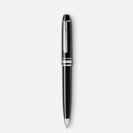

Case study between Google Lens and MobileNet
Google Lens
VS
Mobilenet
-
Test Image -
- Test Image -
-
Test Image -
- Test Image -
- Test Image -
- Test Image -
- Test Image - 
- Test Image -
-
Test Image -
Output on Google Lens - Apple
Output on Mobilenet Model - Apple
Result -
Both Are Accurate
Output on Google Lens - Toy Ball
Output on Mobilenet Model - Ball
Result -
Both Are Accurate
Output on Google Lens - Banana
Output on Mobilenet Model - Fruit
Result -
Google lens is more Accurate
Output on Google Lens - Comb
Output on Mobilenet Model - Brick
Result -
Google lens is more Accurate
Output on Google Lens - Headphones
Output on Mobilenet Model - Mic,headset,spaker
Result -
Google lens is more Accurate
Output on Google Lens - Key
Output on Mobilenet Model - unlocker
Result -
Google lens is more Accurate
Output on Google Lens - Pen
Output on Mobilenet Model - pen , ball pen
Result -
Google lens is more Accurate
Output on Google Lens - Scissors
Output on Mobilenet Model - cutter
Result -
Google lens is more Accurate
Output on Google Lens - spoon
Output on Mobilenet Model - spoon
Result -
Both is Accurate
Google lens is more Accurate (Google Win )
Developed by - Kunal Rana